Here we go again. I'm writing this introduction in March 14th 2026 and the Oscars are tomorrow.
In the last months I found myself thinking a lot about two quotes from great films I saw last year:
From here on in it's one battle after another.
Feels like 2025 (but really, applies for any year). And:
La vida es como la espuma, por eso hay que darse como el mar.
Feels like life. The image of Maribel Verdú going into the sea came unbidden to my mind costantly.
2025 had me worried at times about whether I'd be able to keep up my movie watching the way I like it, i.e., going a lot to movie theaters and watching lots of films, both old and new. The former is crucial because seating in the dark in a movie theater, locked in, is one of my favorite things. The latter is what allows me to be able to have a representative view of newer films, to reduce the number of holes in my old-movie awareness, and to rewatch films, which is good both for films that I like, allowing a deeper experience, and to reevaluate films that did not hit quite right the first time.
It all ended well though. I saw lots of films (182 in total) and went 76 times to a movie theather, my most ever. The number of great films from 2025 was not that impressive, though, leading to a weaker "Best of" list (always under construction) than that of 2024, but that did not change the fact that I saw a lot of great cinema, ever renewing my passion for this absolute art form.
The Journey ⋅ Highlights ⋅ Miscellaneous ⋅ Best Older Films First Watched in 2025 ⋅ Best Newer Films First Watched in 2025 ⋅ Top 100 of the last 25 years
The overview of my movie watching in 2025 is summarized in the
plot
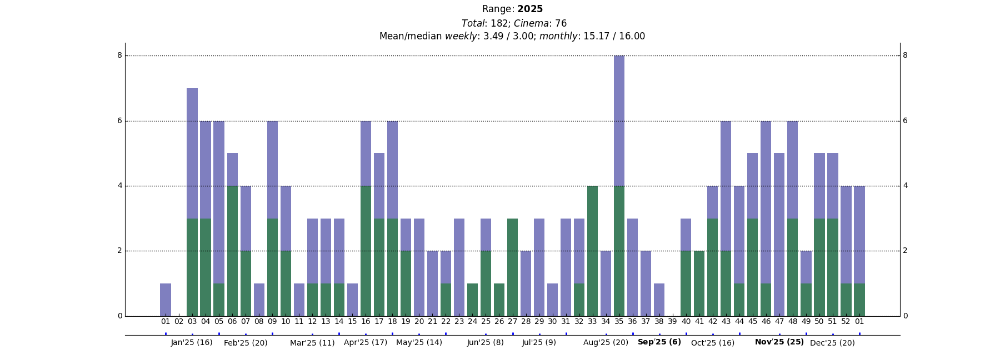
I was on vacation until mid-January and away from Belo Horizonte, and ended up watching only one film in the period, while visiting my family in Sousa,
From mid-March to mid-April I had a couple 1-film weeks and a few "standard" weeks
May came with increasing work obligations and then in June and July I traveled a lot, for work and for vacation.
As always I started August annoyed with the recent slow months, movie-watching-wise, and with a weekly average getting dangerously close to 3. And as has been common, the tide changed, and I got into a good pace. In Week 35 specially I had the highest number of films watched in 2025, with 8, including 4 in a cinema, capped by a marvelous rewatch of Mononoke Hime in IMAX. That was also the second 4-cinema week of August, but alas, the last.
September marked the beginning of my downfall. It was the slowest month of the year, with only 6 films, none in a cinema. Friends visiting, a research collaborator visiting, then three straight weeks traveling for work.
During those last months of 2025, going to the movies was a constant in my life, something to count on, which was very nice. That's what movies are for. So it was that despite the ups and downs, it's been, as always, wonderful. Here are all the films I saw in 2025.
Note: The cards below have the date relative to that watch of the respective film, where I was then, and the rating I gave to that watch[5]. The circled arrows say that watch was a rewatch. In grey there are tags for things like if I saw the movie in a cinema, if I cried, if I dozed-off, etc.
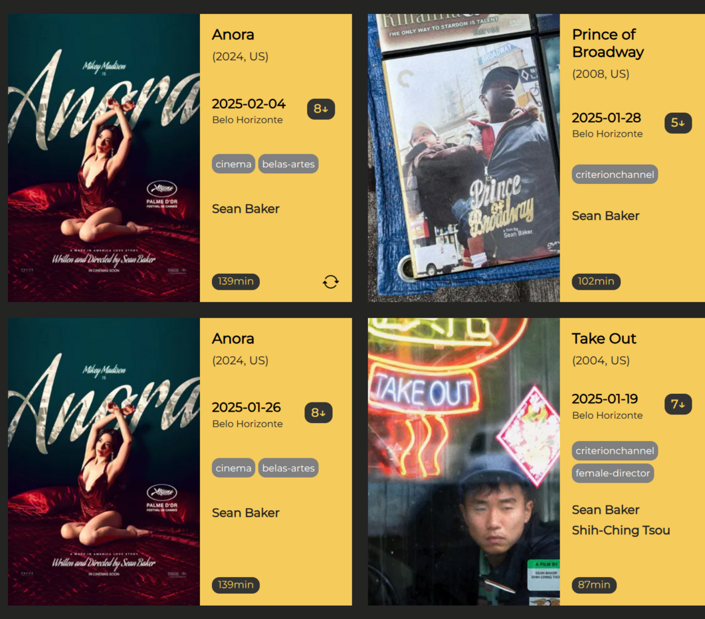
I love Sean Baker so much. It's not only that I like his films, but I also love his passion in defending cinema, how he approaches his films, how he continues to work as he thinks he should. I was very hyped for Anora, and to get in the mood I also took opportunity of a Criterion Channel series to catch up with some of his older films that I had not seen. So in a little more than two weeks I had these four films from him, including Anora twice, which I loved, but not as much as I thought I would. Still, I was just so happy with how much Baker achieved there, with how compelling this film is. That a month later Sean Baker would be so thoroughly crowned by the Hollywood establishment was unthinkable to me, but I welcomed it and was incredibly happy for him.
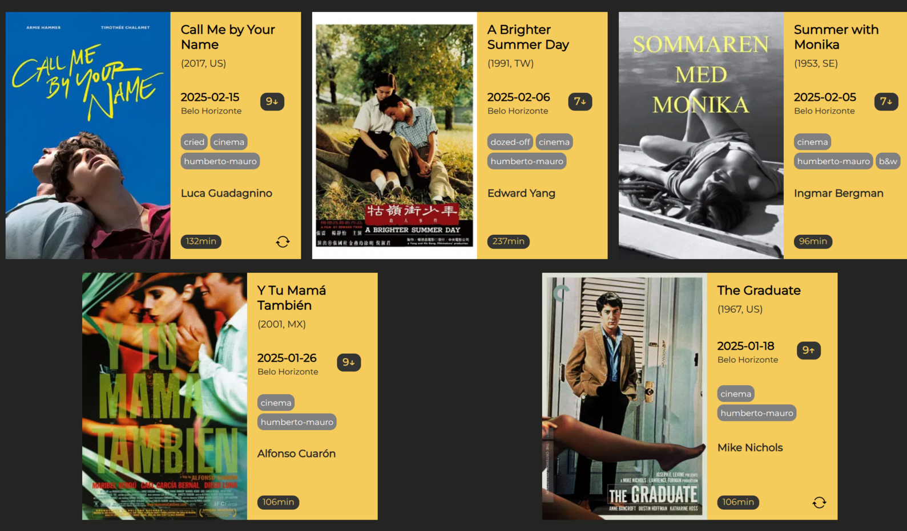
Cine Humberto Mauro had a great series going in January and February on summer movies. I could not go as much as I wanted but I still managed to rewatch a couple favorites and to see some films I had been meaning to for a while. Besides the delightful Summer with Monika, there was all that cinema of A Brigther Summer Day, which covers so much, at moments so overwhelmingly, that it feels thorough. But the greatest impact was from Y Tu Mamá También, a film that absolutely surprised me with its scope, its heart, its life. The film would go on to stay with me always.
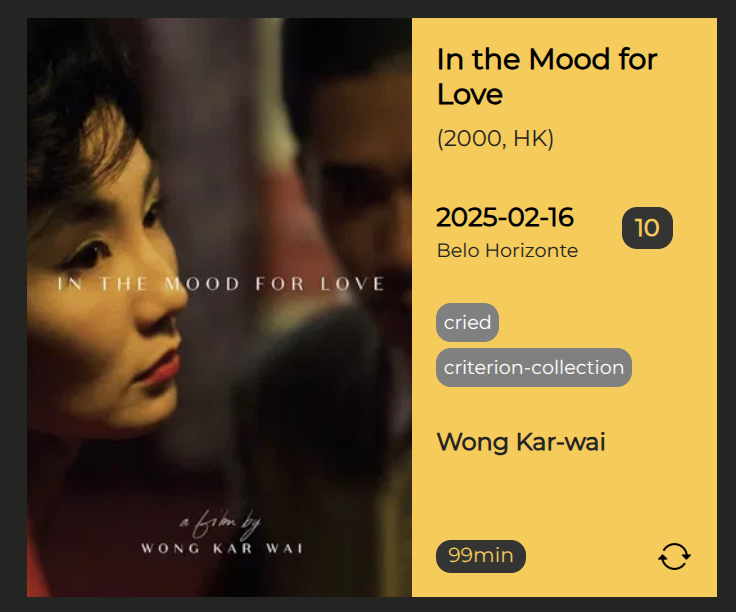
I said everything already in my impressions on how this movie, even with all the expectations and an underwhelming first watch from decades ago, still thoroughly floored me.
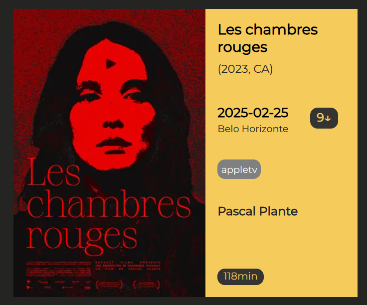
A film I had missed from 2023 but that I sought out after seeing Mike D'Angelo's raves. I was not expecting what this film threw at me. It is, really, really, really, insane. Specially that scene, where a look, and a scream, which is not really a scream but a music explosion that I nevertheless will always remember as a scream, propel such force that I distinguishedly felt like time stopped. I spent the rest of 2025 suggesting this film to people whenever somebody asked me for a recommendation.
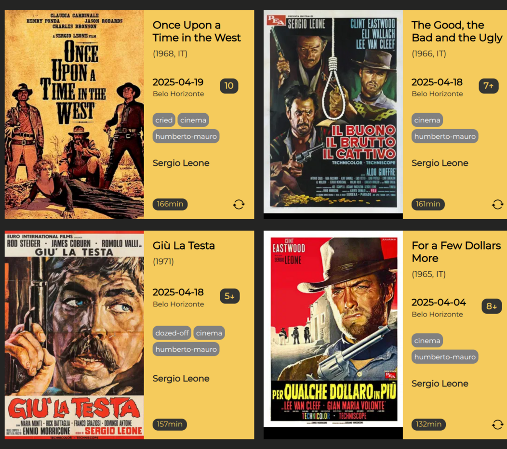
In 2024 there had been a one-off showing of Once Upon a Time in the West and it was glorious, so I was really glad when they announced a whole Spaghetti Western series at Cine Humberto Mauro, centered specially on Leone's films.
I was happy to rewatch my favorite Dollar films, the last two, for the first time in a cinema. Incredible films, but its their endings that make them so marvelous, and the boldness of their epic scopes is experienced all the better in the big screen.
I had never seen Giù La Testa, so it was interesting, but it didn't quite work for me. The series closed with the only reasonable choice. What power. I was completely transported.
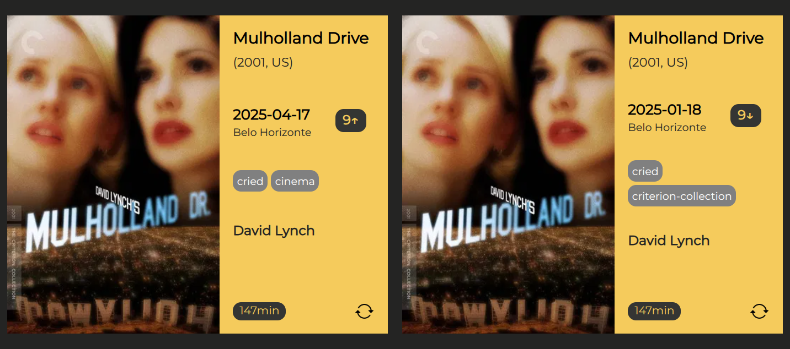
When Lynch left us I wanted to honor him in the only way that makes sense to me, by celebrating his movies, so I (finally) watched my Criterion 4K UHD edition of Mulholland Drive, my favorite of his movies. It was an intense, difficult experience, given what this film is. The art transcends, and Lynch does as well.
In April the film was re-released in cinemas and I of course went to see it again. It hit me harder, which I did not expect. Thank you, Lynch.
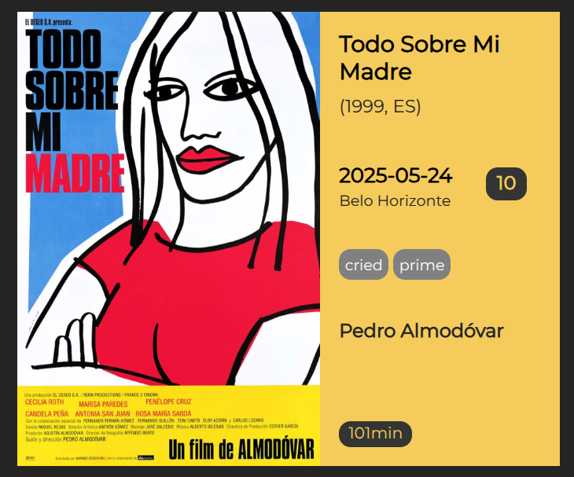
For years I was skeptical of Almodóvar, not having liked La piel que habito when I saw it, probably around its time of release, and being unimpressed by Madres paralelas and by Extraña forma de vida. But then I watched Hable con ella in 2024, was completely taken by it, and finally felt Almodovarizado, i.e., I finally understood what people talked so much about.
None of that prepared me to how much Todo sobre mi madre would impact me. I surrended wholly to its melodrama. So bold, so vast, so outrageously real. To this day I can vividly remember Huma looking back, just before the cut to black, the electrifying sensation. Indelible.
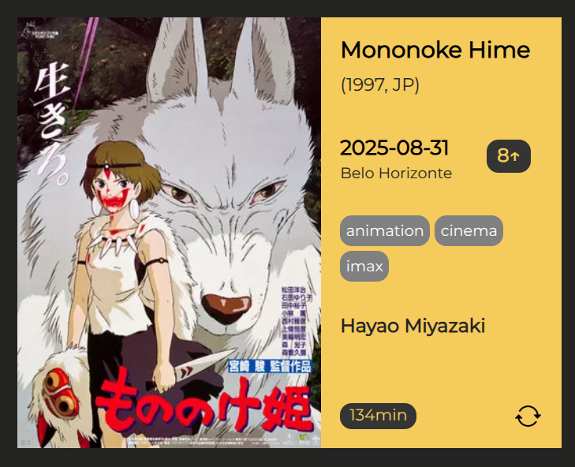
I've always resisted this film. This was maybe my fourth or fifth time watching it. But there was always some nagging sensation after I finished it, on account of its ending, or something in between (extended beginning never let me down). So I was just so happy to finally surrender to Mononke Hime, to feel just elated by it. And seeing it in IMAX, gloriously, with Joe Hisashi's score surging through that overpowering sound. It gave me life. This also topped an amazing week, the most prolific of 2025, where I went to the cinema a bunch, saw old and new films, and just thoroughly enjoyed it.
A huge catalyst for my newfound movie enthusiasm in October was going to movie theaters a lot, and instrumental to that was Cine Humberto Mauro's series 1945: 80 anos depois. Rewatching Strangelove, and for the first time in a cinema, was as delightful as I expected, but doing the same for Come and See was something else. It hollowed me out, as I also expected.
Three new films from 2025 that highlighted October, in one way or another, were also touching on war, or military, themes. Lots of pirraça, as Kleber Mendonça Filho would put it. Alas, a theme ever more timely.
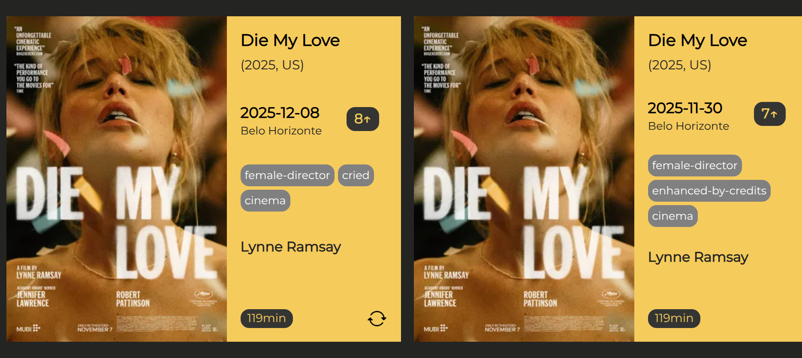
Up until this point my favorite film from 2025 was 28 Years Later, which I loved but not as much as I thought was warranted from the top film of the year. I watched Die My Love and it did not top it, but it left me intrigued, eager for more. I had to insist. And I was greatly rewarded. It felt like an apotheosis. 2025, what a year.
Regarding eclecticism country-wise, 2025 was a year where I saw a higher proportion of films from the US than in previous years, which was a bummer, since in the last years I was improving on this. I had a 67.03% rate, way up from the 59% and 58% of 2024 and 2023. That said, taking together films from the UK, the rate of Anglophone films stayed at 70%, as it was last year.
But I did see films from more countries than last year (22, vs 20 of 2024, close to the 24 of 2023). It's a fun distribution: vast majority of US films, then a couple countries with about 10 films (or aroung 5% of the total): Brazil and Japan; a few countries with around 5 films: France, Iran, Hong Kong, the UK; then most others in between 1 and 3 films.
There were 27 2-films days and 4 3-films days in 2025, and no days with more than 3 films. This means a more balanced distributions of films across days than in 2024 and 2023, which had way more of those.
What there were many more of in 2025 were 2 cinema days, in total 10 of them. In 2024 I had 6, including a 3-cinema day, of which there was none this year. In 2023, the previous year with more such days, I had 7.
In 2025 I had 4 weeks with 4 films seen in a cinema, and 11 weeks with 3 films in a cinema. This was way more than 2024, where there were no 4-cinema weeks and 10 3-cinema weeks. Interestingly in 2023, the previous record year for cinema going, with 70, there were only 8 3-cinema weeks, and no weeks with more than that. I've never had a 5-cinema week.
Which tells the following story of my weekly movie average, since I started seriously collecting data on my movie watching, in 2015:
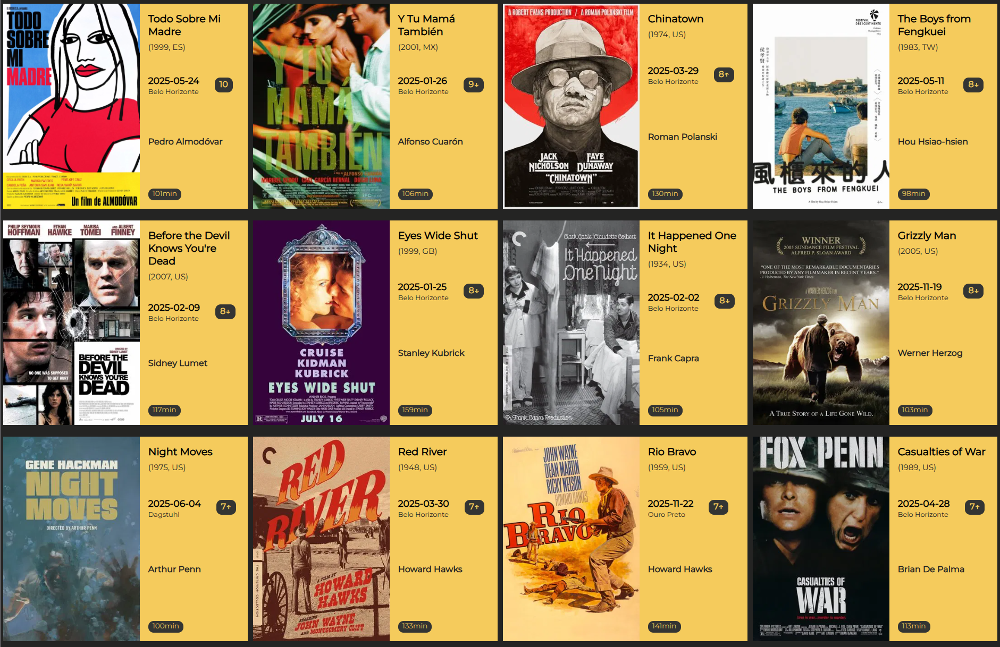
Differently from previous years, 2025 was a much weaker year in terms of first watches of older films. I did see significantly less older films for the first time than in previous years (52 this year while 69 and 80 in 2024 and 2023), while at the same time the number of older films rewatched went up significantly (52 vs 42 and 40), so that might explain it.
Two films seared into my mind: Todo Sobre Mi Madre and Y Tu Mamá También. It was also revelatory to see Nicholson in Chinatown (OK, so that was what everybody talked about regarding his acting), and it was really rewarding to experience the overwhelming melancholy of The Boys from Fengkuei, and the thrills of films like Before the Devil Knows You're Dead.
Honorable mentions: A Brigher Summer Day, Rachel Getting Married, Take Out, After Life, Thel Face of Another.
The list with the cards for the movies is available here.
Note: Since last year I settle for a list of best newer films seen in a year, since the actual best films of a year is always evolving through the following year..
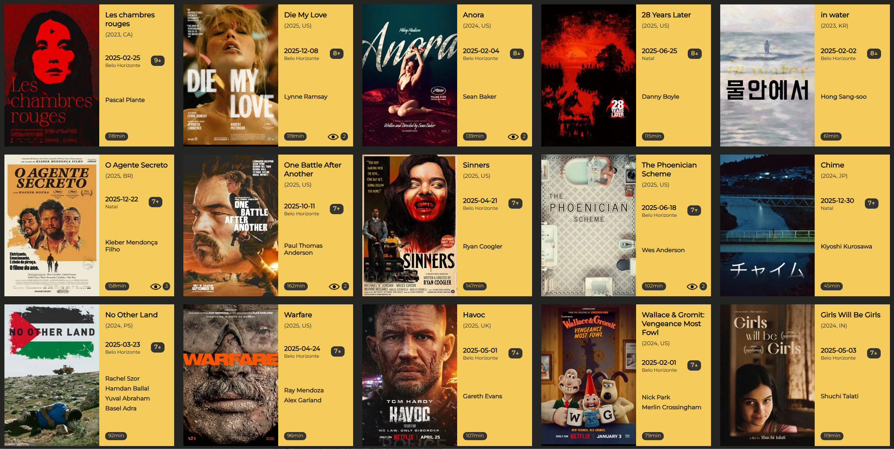
A year far below 2024, which was already a less strong year than average. 2023 was maybe just too stacked and that is skewing my expectations too much. Even this year my favorite is from 2023, and in water is also in the top 5.
The list with the cards for the movies is available here.
Honorable mentions: Mickey 17, Bugonia, Eephus, The Final Reckoning, It Was Just an Accident, Baby, O Último Azul, A Normal Family, Cloud, Wake Up Dead Man.
Inspired my the New York Times top 100 films of the 21st century (nevermind including 2000 as if it were part of this century) I felt like doing a top 100 myself as well for the first 25 years in the 2000s.
This was a rather painful process, as it turns out, which I did mostly
in early July of 2025.
I thought about rewatching a bunch of unrated films that either I considered could shot up to the top 10
or top 20 (which I was considering of being more particular of the films to get into it, leaving
all others unordered) or that I might want to include in the top 100. For the reasons discussed at length above,
I never got to do that really and only a couple things changed from the initial list.
So here is the top 100 and, to avoid me dragging this on forever, a top 25 in a loose order only of films I rated and that I'm only truly confident about the top 2. In the top 100 after the first 25 all others are in order of year of release / alphabetical.
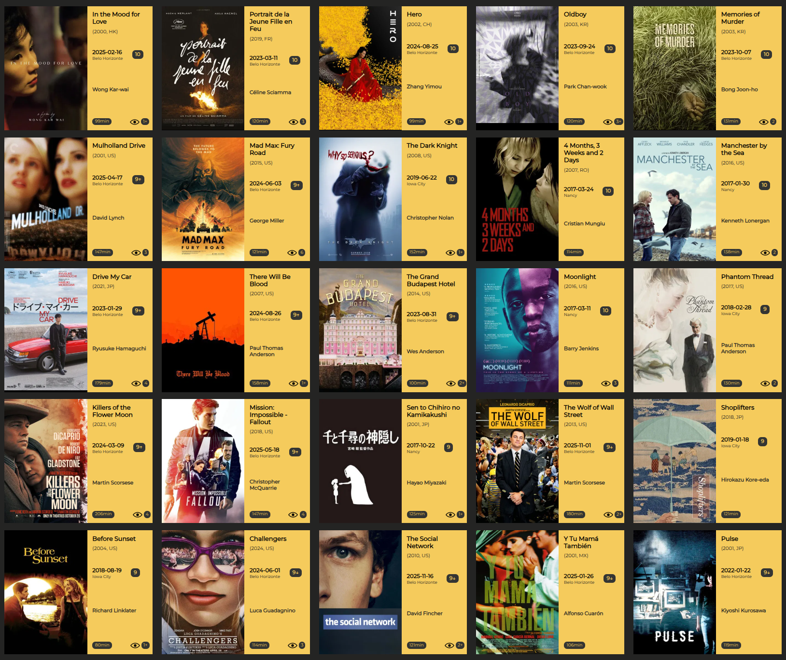
Looking at the distribution it is surprising to me that it was so even! Only 2005-2009 and 2015-2019 differ more, being a bit under- and over-represented, respectively.
| Top25 | Top100 | |
|---|---|---|
| 2000–2004 | 9 | 20 |
| 2005–2009 | 3 | 15 |
| 2010–2014 | 3 | 19 |
| 2015–2019 | 7 | 26 |
| 2020–2024 | 3 | 20 |
And that's it. Now it's actually March 15, the Oscar's red carpet is happening, and arguably I've blown yet another deadline. Either for 2026 I really start early or I don't probably do this anymore, which would be a sadness as it gives the opportunity to reflect on my year in filminhos, on why I like this so much, on why I struggled, etc. I like to revisit these accounts because it also makes me remember all these moments of these years. So they are not lost in time. So here is hoping.